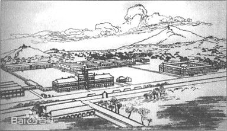

文章一级标题
文章二级标题
东南大学（Southeast University），简称东大，位于江苏省省会南京市，是中央直管、教育部直属的副部级全国重点大学，著名的建筑老八校及原四大工学院之一，国家“211工程”、“985工程”首批重点建设的大学，是“卓越工程师教育培养计划”、“卓越医生教育培养计划”、“2011计划”、“111计划”入选高校，“卓越大学联盟”、“中俄工科大学联盟”、“中欧工程教育平台”主要成员。“中欧工程教育平台”主要成员。
东南大学是中国最早建立的高等学府之一，素有“学府圣地”和“东南学府第一流”之美誉，其前身是创建于1902年的三江师范学堂。1921年经郭秉文先生竭力倡导，以南京高等师范学校为基础正式建立国立东南大学，后经历了国立第四中山大学工学院、国立中央大学工学院、南京大学工学院等历史时期。1952年全国院系调整，以原中央大学工学院为主体，先后并入复旦大学、交通大学、浙江大学、金陵大学等校的有关系科，在中央大学本部原址建立了南京工学院。1988年5月，学校更名为东南大学。2000年4月，原东南大学、南京铁道医学院、南京交通高等专科学校合并，南京地质学校并入，组建新的东南大学。 截至2016年3月，东南大学占地面积5888亩，建有四牌楼、九龙湖、丁家桥等校区；设有29个院（系），拥有75个本科专业；有全日制在校生30000余人，其中研究生14440余人，在校留学生人数达到1813人，已发展为一所以工科为主，理学、工学、医学、文学、法学、哲学、教育学、经济学、管理学等多学科协调发展的综合性研究型大学